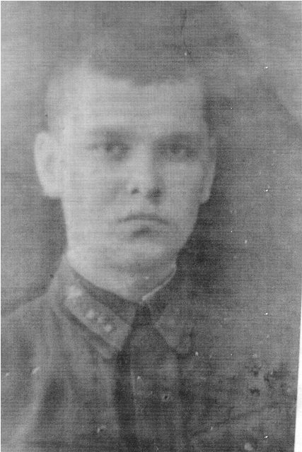
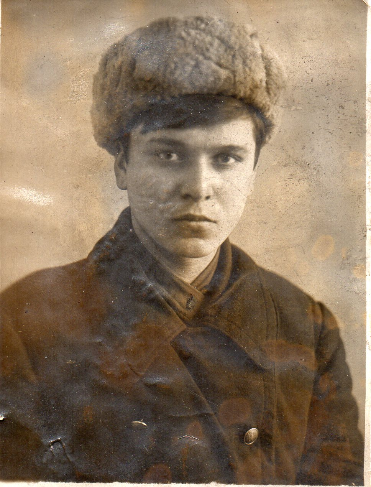
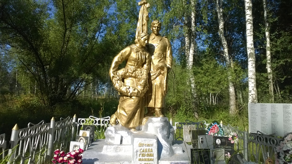
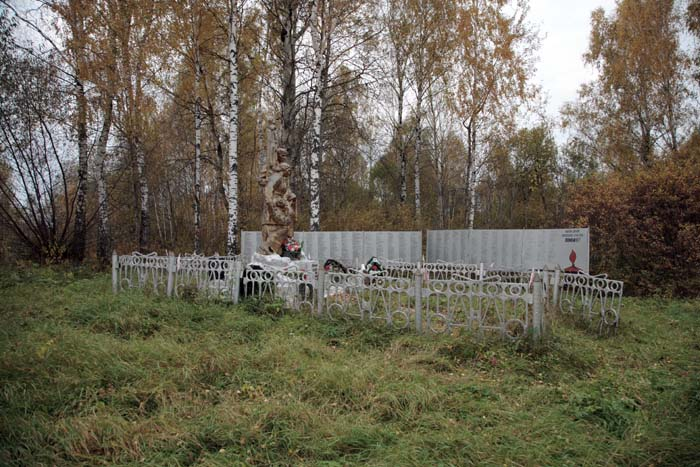

|
Вчера пришло очередное, из многих сотен полученных ранее, письмо с жалобой на некорректную запись в Книге Памяти Тверской области. Верным в этой записи оказались только ФИО погибшего: СЕРОВ Василий Михайлович из Бежецкого р-на. Исправили:

«СЕРОВ Василий Михайлович, род. в 1920 г., дер. Никифорцево, Закрупский сельсовет. Призван в сентябре 1940 г. Красноярским ГВК. Воентехник 2 ранга, 83-я гв. сд, умер от ран в 447-м мсб 2 апреля 1943 г. Похоронен: перезахоронен в братскую могилу в с. Зимницы Думиничского р-на Калужской области. (Книга памяти, Бежецкий район)».
И решили поместить в новостях рассказ доцента ТвГУ Анатолия Серова о своём, не вернувшемся с войны, дяди.
К 70-летию Великой Победы
/ письмо в редакцию/
Незаживающие раны той страшной войны:
о чем рассказала одна из фамилий на обелиске братской могилы в Зимницах

Совсем скоро к нам придет весна: опять зацветет белым огнем черемуха, наступит цветущий май, и наша страна будет отмечать Великий Праздник – 70-летие Великой Победы. Прошло уже много лет, но события тех страшных дней не стираются из памяти людей. Слишком большой ценой досталась Великая Победа: миллионы погибших, миллионы искалеченных, миллионы плачущих матерей и жен. Раны войны не зажили до сих пор. В возрасте неполных 23 лет погиб в ожесточенных боях на территории Калужской области и мой дядя.
Василий Михайлович Серов родился в 1920 году в деревне Никифорцево Закрупского сельсовета Бежецкого района Калининской (Тверской) области в крестьянской семье.
Отец Василия Михаил Иванович работал колесным мастером: изготавливал вручную деревянные колеса. Мать Агриппина Андреевна работала в колхозе разнорабочей. Семья была многодетной: пять мальчиков и 2 девочки. В 1935 году Василий с высокими результатами закончил Еськовскую семилетнюю школу и поступил в Бежецкое педагогическое училище. Учился очень хорошо, отличался прилежностью. Василий был высоким, красивым, очень любил своих родителей, братьев и сестер и они ему отвечали тем же. В 1935 году после пожара, в котором сгорел дом, семья переехала на станцию Шишково того же Бежецкого района. В 1938 году Василий окончил педагогическое училище и по распределению уехал в Красноярский край, работал учителем. Часто писал письма родителям и присылал деньги: многодетная семья жила очень трудно.
В 1940 году Красноярским ГВК Василий был призван на службу в ряды Красной армии и сразу был зачислен курсантом в Ленинградское Краснознаменное артиллерийско-техническое училище. В сентябре 1941 года в связи с началом Великой Отечественной войны училище было эвакуировано в г. Ижевск Удмуртской АССР.
По данным архивной карты в 1942 году Серов В.М закончил военное училище в звании воентехника 2-го ранга и был направлен в распоряжение начальника Центральной артиллерийской базы № 34. Василий часто писал письма домой. Последнее письмо семья получила в апреле 1943 года. Василий писал, что воюет на смоленском направлении. После этого письма никаких вестей от Василия не было. Через некоторое время родители получили извещение, что их сын пропал без вести. Начались долгие годы ожидания известий о его судьбе. Похоронку семья так и не получила.

После окончания войны мать и отец неоднократно обращались в Бежецкий горвоенкомат с просьбой выяснить судьбу сына. Для этого родителями по требованию горвоенкомата была составлена его биография, заполнена специальная анкета. К обращению прилагалась фотография, которую Василий прислал еще из Ижевска. Все это мы узнали из архивных материалов, которые удалось найти на сайте «Мемориал» http://www.obd-memorial.ru/html/index.html. МО СССР отказывало в поиске сведений, так как Василий был признан пропавшим без вести(существовала такая директива – пропавшие без вести исключались из списков Красной армии). Только в 1956 году семья получила известие о его гибели и месте захоронения. На могилу приезжала его сестра Евдокия.
Василий Михайлович Серов, воентехник 2-го ранга 447 отдельного мотострелкового батальона 83 гвардейской дивизии (полевая почта 54231) был тяжело ранен (сквозное ранение в живот) и умер от ран 2 апреля 1943 года. Похоронен с отданием воинских почестей в деревне Ботия Думиничского района Смоленской /ныне Калужской/ области в братской могиле № 9. Перезахоронен в братской могиле в селе Зимницы Думиничского района Калужской области в 1956 году за №787.

На станции Шишково все еще крепко стоит его родной дом. Я часто бываю там, хотя дом уже давно нам не принадлежит. Возникает ощущение, что старый дом все еще ждет Василия – живого, молодого, красивого. Кажется, что вот-вот сейчас остановится совсем перед окнами почтовый поезд, и Василий как раньше соскочит еще на ходу с подножки вагона и побежит к родному дому, постучит в знакомую дверь…
Анатолий Серов, кандидат наук, доцент Тверского госуниверситета. г. Тверь
|